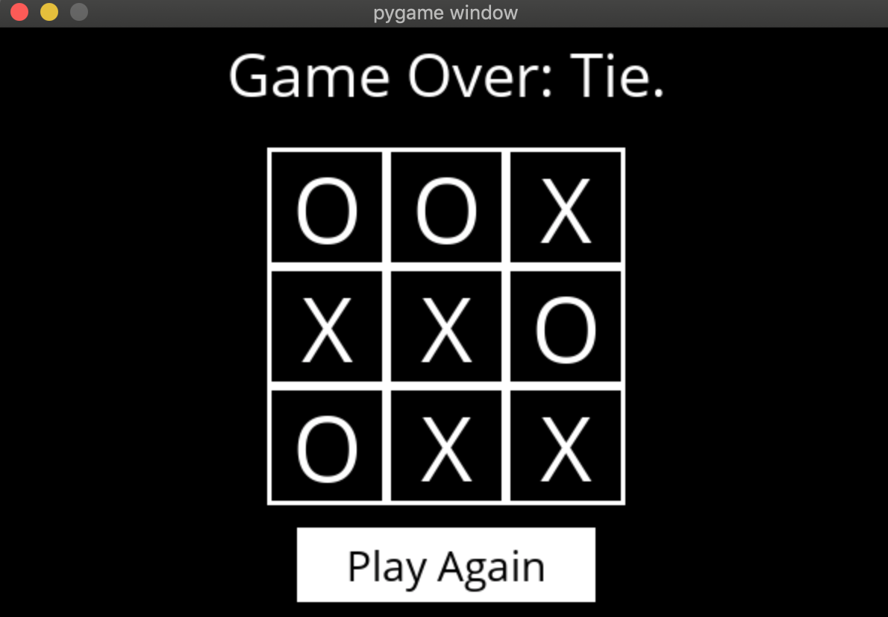
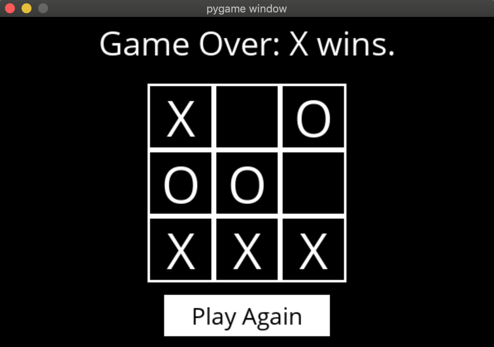
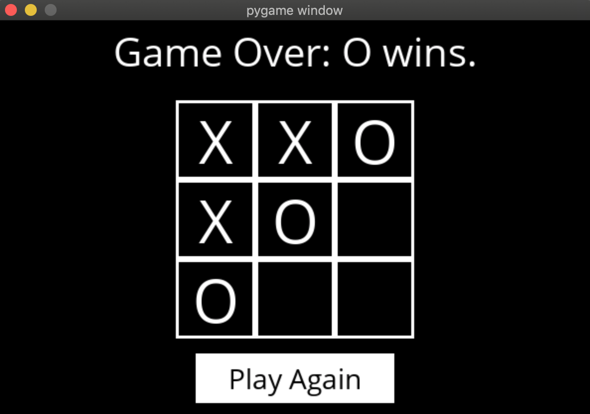

GITHUB LINK: https://github.com/jhartfie/TicTacToeAi
Unbeatable Tic-Tac-Toe Program in Python
Dive into the classic game of Tic-Tac-Toe with a twist - an invincible
Python program that guarantees a draw or win in every game. This project
showcases an advanced level of strategic algorithm implementation,
allowing users to choose their symbol (X or O) and pit their wits
against a computer opponent designed to never lose. Through intelligent
move selection and game state analysis, this program stands as a
testament to the power of algorithmic problem-solving in creating
challenging and engaging gameplay experiences.
Player Choice and Strategic Gameplay:
Offering the option to play as either X or O, the program caters to
player preference and sets the stage for a strategic showdown. Whether
you're a beginner looking to learn the ropes or an experienced player
aiming to test your skills against a formidable opponent, this
Tic-Tac-Toe game adapts to your level of challenge.
The unbeatable nature of the program is rooted in a sophisticated algorithm that evaluates the game board with each move, ensuring the computer always makes the most optimal decision. This level of intelligence in gameplay invites players to think critically and strategize more effectively to match the computer's prowess.
This Tic-Tac-Toe project not only provides a fun and interactive gaming experience but also serves as an educational tool, demonstrating the principles of game theory and algorithmic strategy in Python programming. It exemplifies how technology can enhance traditional games, making them more dynamic and intellectually stimulating.
PICTURES OF TIC TAC TOE GAME:

Three possible outcomes:
Tie Game (Nice! 😃)
Computer (X) Wins
Computer (O) Wins
  